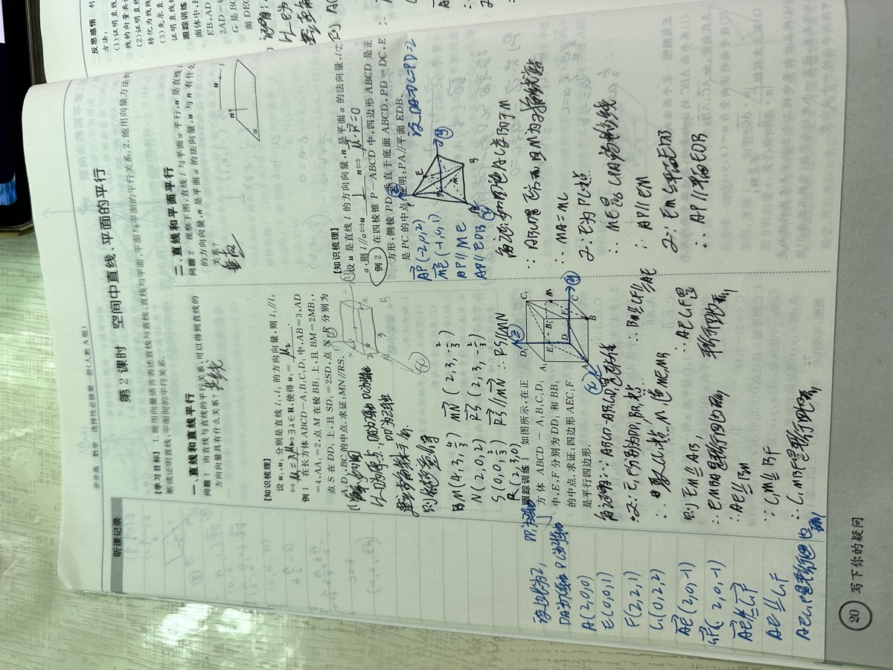

拍空白题目
教师拍题，AI 建题框与评分标准草稿。
视源股份命题 · 希沃生态
补齐希沃生态里的「评」。
纸质作业照常写、教师端集中拍；AI 切题、识别、判分并保留证据，结果回到讲评课与复核，而不是停在一份报告。
空白题目答案 + 全班学生过程 = 一人一评价
教师拍题，AI 建题框与评分标准草稿。
认人、切题、判分；低置信进复核。
先讲 3 个知识点，再面批需调整的 3 位同学。

如何落地
多端采集进中台，结果导向白板讲评、变式练习与复核存档。
教师在多端完成低门槛采集，系统把图片、身份、题目和作答绑定成可批改任务。
共性错题与讲评顺序进课堂。
讲完继续练，巩固薄弱点。
题目、错因、状态可追溯。
复核聚焦异常，客观题可自动放行。
命题对照 · 题目.html
正在载入《题目.html》赛道说明…
核心能力要求
交付要求
错因诊断体系
不只判断对错，还要诊断「为什么错」。三层递进的错因分析体系，让每次批改都有教学决策价值。
定位本题考查的知识点，沿知识图谱追溯前置依赖，找到根因知识漏洞。
对标讯飞三维度框架，用大模型轻量实现：知识掌握、思维方法、解题习惯。
分析涂改痕迹、答题步骤，判断「真不会」还是「粗心错」，评估整体认知层级。
三维度×四层级，4000+标签，专家鉴定
五重错因分析，大模型+知识图谱
知识漏洞+失误类型，27年教研积淀
K-Trace知识图谱，前置依赖追踪
薄弱知识点归纳，6000万题库
三维度×三级结构，有体系感，对标新课标
步骤级错误定位，彩色标签直观展示
知识图谱前置依赖，找到「病根」
大模型 Prompt Engineering 即可，不做海量标签
额外现场能力